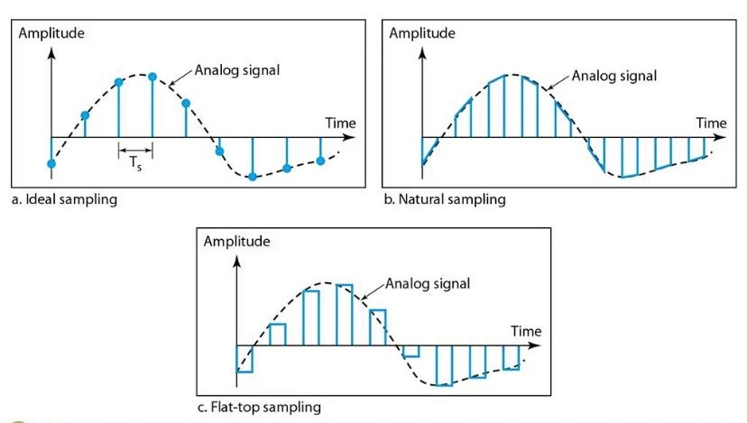

Modulación por Pulsos Codificados (PCM)
¿Qué son?

La Modulación por Pulsos Codificados (PCM, por sus siglas en inglés) es la técnica de modulación digital más fundamental y ampliamente utilizada para representar señales analógicas (continuas) mediante una secuencia de pulsos binarios. Desarrollada en los años 30 y consolidada con la electrónica digital, la PCM constituye el estándar en sistemas de telefonía, audio digital (CDs, WAV), VoIP y transmisiones modernas, debido a su capacidad para prevenir la degradación de la señal por ruido e interferencia.
La idea esencial de la PCM es convertir una señal analógica continua en una señal digital que es discreta en amplitud y en tiempo. Este proceso de digitalización se realiza en tres etapas fundamentales: Muestreo, Cuantificación y Codificación.
Etapas del Proceso PCM
Muestreo (Sampling)
Consiste en tomar valores de la señal analógica a intervalos de tiempo regulares (Ts). Para asegurar la reconstrucción perfecta de la señal, la frecuencia de muestreo (Fs) debe cumplir con el Teorema de Nyquist-Shannon: Fs>2f max (el doble de la frecuencia máxima de la señal). Un ejemplo práctico es el audio de CD, donde para una señal de 20 kHz, se usa una (Fs) de 44.1 kHz.
Cuantificación (Quantization)
En esta etapa, los valores de amplitud de las muestras (que aún son continuos) se convierten en un conjunto finito de niveles discretos. Esto es esencialmente una aproximación, lo que inevitablemente introduce el error de cuantificación (Eq). La cuantificación puede ser uniforme (niveles espaciados igualmente) o no uniforme (usada en voz con leyes U y A, para mejor eficiencia).
Codificación (Encoding)
Finalmente, cada nivel cuantificado se transforma en un código binario. El número de bits (n) por muestra se determina por el número de niveles de cuantificación (L) disponibles, según la fórmula n = log2 L. Por ejemplo, 256 niveles requieren 8 bits por muestra. El resultado es el flujo binario que se transmite.
Aplicaciones de la PCM
Telefonía digital (sistemas T1, E1).
Audio digital (CD, DVD, WAV).
Transmisiones satelitales y microondas digitales.
· Televisión digital y sistemas de video.
· Codificación de voz (VoIP, GSM).
· Procesamiento y almacenamiento de datos en computadoras.